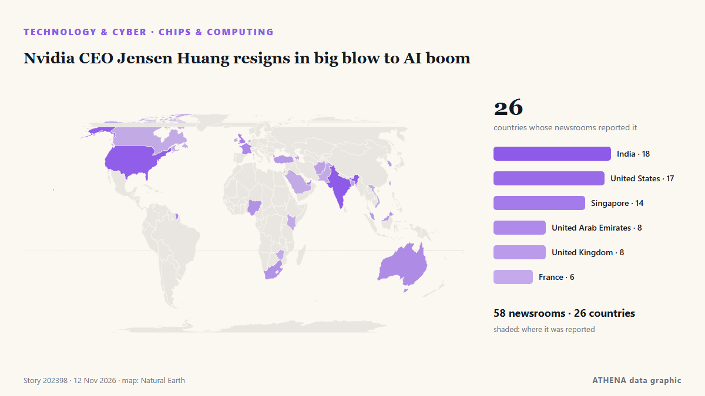

Nvidia CEO Jensen Huang resigns in big blow to AI boom

Nvidia chief Jensen Huang sits at the center of the artificial intelligence boom, and the spy scandal that erupted over the weekend threatens to shake the company at a time when confidence in the AI… από France 24 English
Αναφέρθηκε ανεξάρτητα από 62 μέσα σε 27 χώρες από τις 9 Νοε, πρώτο το France 24 English· η κάλυψη εξαπλώνεται ακόμη. Το ATHENA εκτιμά τον κίνδυνο μέτριο (3.9/10), κυρίως λόγω της σοβαρότητάς του και του ρυθμού κάλυψης. Βεβαιότητα 87% (υψηλή): το επιβεβαιώνουν 62 ανεξάρτητα μέσα, μέση αξιοπιστία 72%. Μέσα ανά χώρα: Ηνωμένες Πολιτείες (7), Σιγκαπούρη (5), Ινδία (4). Κάλυψη: 9 Νοε έως 12 Νοε, 57 ώρες.
Γιατί έχει σημασία: Οι εξελίξεις στην τεχνολογία και την κυβερνοασφάλεια διαμορφώνουν την ασφάλεια, τον ανταγωνισμό και τους κανόνες της ψηφιακής ζωής.
Τι άλλαξε: 121 νέες αναφορές από 60 μέσα στο 24ωρο έως 12 Νοε.
Πρώτη διατύπωση: Taiwan chipmaker CEO warns memory price rises are unsustainable
Οι τίτλοι των ειδήσεων παρουσιάζονται στα αγγλικά, όπως δημοσιεύτηκαν.
Πώς να διαβάσετε αυτή τη σελίδα
- Τι διαβάζετε
- 62 μέσα σε 27 χώρες ανέφεραν αυτό το γεγονός. Οι αναφορές παρακάτω εμφανίζονται με τη σειρά που δημοσιεύτηκαν· κάθε τίτλος ανοίγει το αρχικό άρθρο. Το ATHENA δεν γράφει δικά του ρεπορτάζ.
- Η εκτίμησή μας
- Για την καταγραφή — Οι αναφορές περιγράφουν ένα ολοκληρωμένο, εσωτερικό, εμπορικό ή προσωπικό ζήτημα. Το καταγράφουμε ώστε να βλέπετε ποιος το ανέφερε και πότε. Δεν παρακολουθούμε εδώ κίνδυνο ευρύτερης σύγκρουσης.
- Πόσα στοιχεία υπάρχουν
- Ισχυρή Πολλά ανεξάρτητα μέσα σε πολλές χώρες περιγράφουν το ίδιο γεγονός.
Αφού αφαιρεθούν οι επαναλήψεις, τα άσχετα και τα παλιά στοιχεία, υπολογίζονται 23 από τις 39 αναφορές που παρατίθενται· το 92% των τίτλων αντιστοιχεί στο γεγονός.
Περίπου το 39% των τίτλων είναι ανάλυση ή άποψη και όχι απλό ρεπορτάζ.
- Τι δεν σημαίνει
- Το ATHENA μετρά πώς καλύπτεται ένα γεγονός, όχι αν είναι αληθές. Δεν είναι πρόβλεψη, κρίση για το ποιος έχει δίκιο ή συμβουλή.
- Τι θα την άλλαζε
- Αναφορές από άλλα ανεξάρτητα μέσα που δείχνουν διαφορετική εξέλιξη, ή σαφής επιβεβαίωση ή διάψευση από επίσημη πηγή.
Εκτίμηση R2 · ανανεώνεται με κάθε ενημέρωση της σελίδας. Το ATHENA δεν έχει δημοσιεύσει ακόμη ιστορικό επιδόσεων για αυτές τις εκτιμήσεις· όταν το κάνει, θα συνδέεται εδώ.
Με μια ματιά
Επιλέγεται, βαθμολογείται και γράφεται από τη δημοσιευμένη μεθοδολογία του ATHENA. Κανένας συντάκτης δεν παρεμβαίνει σε μεμονωμένα γεγονότα. Πώς παράγεται ›
| 09 Nov 20:09 UTC | 1 |
|---|---|
| 09 Nov 23:09 UTC | 0 |
| 10 Nov 02:09 UTC | 1 |
| 10 Nov 05:09 UTC | 0 |
| 10 Nov 08:09 UTC | 0 |
| 10 Nov 11:09 UTC | 0 |
| 10 Nov 14:09 UTC | 1 |
| 10 Nov 17:09 UTC | 0 |
| 10 Nov 20:09 UTC | 0 |
| 10 Nov 23:09 UTC | 3 |
| 11 Nov 02:09 UTC | 0 |
| 11 Nov 05:09 UTC | 1 |
| 11 Nov 08:09 UTC | 0 |
| 11 Nov 11:09 UTC | 3 |
| 11 Nov 14:09 UTC | 4 |
| 11 Nov 17:09 UTC | 1 |
| 11 Nov 20:09 UTC | 7 |
| 11 Nov 23:09 UTC | 6 |
| 12 Nov 02:09 UTC | 11 |
| 12 Nov 05:09 UTC | 27 |
| 12 Nov 08:09 UTC | 34 |
| 12 Nov 11:09 UTC | 17 |
| 12 Nov 14:09 UTC | 15 |
| 12 Nov 08:05 UTC | 4.6 |
|---|---|
| 12 Nov 09:17 UTC | 5.4 |
| 12 Nov 09:27 UTC | 4.3 |
| 12 Nov 09:35 UTC | 5.4 |
| 12 Nov 09:56 UTC | 4.0 |
| 12 Nov 15:06 UTC | 4.8 |
| 12 Nov 15:15 UTC | 3.9 |
| 12 Nov 15:16 UTC | 3.9 |
Γιατί αυτοί οι αριθμοί
Σημασία
Κίνδυνος
Βεβαιότητα
Η κάλυψη — ποιος το ανέφερε και πότε
ο τίτλος όπως δημοσιεύτηκε · ανοίγει το πρωτότυπο- France 24 English · ΓαλλίαNvidia's Huang scandal rattles AI industry built around him
- DigiTimes Asia · ΤαϊβάνCommentary: How will US midterms and Jensen Huang controversy reshape AI policy?
- CNBC World · Ηνωμένες ΠολιτείεςOur Nvidia downgrade — plus, Cramer is looking to add to this position
- Sydney Morning Herald · ΑυστραλίαHow a celebration in Singapore set the stage for the Nvidia spy scandal
- The Jerusalem Post · ΙσραήλTrump received intelligence about Nvidia CEO Chinese spy incident ahead of trip to Beijing - report
- Indian Express · ΙνδίαHow Jenseng Huang, now facing Chinese spy probe, pushed NVIDIA into a succession crisis
- Moneyweb · Νότια ΑφρικήNvidia’s bull case hinges on CEO Huang surviving China spy probe
- Cointelegraph · Ηνωμένες ΠολιτείεςCoreWeave stock jumps 15% premarket after Q3 revenue beats estimates
- Moneyweb · Νότια ΑφρικήNvidia gets rare downgrade as Baird raises CEO uncertainities
- Fast Company · Ηνωμένες ΠολιτείεςNvidia stock gets its first boost of the Jensen Huang scandal era. What’s driving shares higher today?
- The National · Ηνωμένα Αραβικά ΕμιράταNvidia handed downgrade on Jensen Huang and AI uncertainty
- The Independent · Ηνωμένο ΒασίλειοThe history of ‘sexpionage’ after Nvidia CEO's affair with suspected Chinese spy
- TechCrunch · Ηνωμένες ΠολιτείεςIs Jensen Huang’s bad behavior more commonplace than it seems?
- CNBC World · Ηνωμένες ΠολιτείεςAnalysis: Is Nvidia too big to fail? Its AI financing web raises the stakes
- Free Malaysia Today · ΜαλαισίαTech bounce lifts global stocks as dollar gains
- CNA (Channel NewsAsia) · ΣιγκαπούρηTech bounce lifts global stocks as dollar gains
- NDTV · ΙνδίαTrump Official Lutnick Stalled Crackdown On Nvidia Chip Diversions To China: Report
- investingLive (ForexLive) · INTLutnick stalls Trump’s third Nvidia chip diversion crackdown this year, Axios says
- Decrypt · Ηνωμένες ΠολιτείεςNvidia-Backed CoreWeave Is Surging: Here’s What It Means for the AI Boom
- The Business Times · ΣιγκαπούρηLutnick stalled Trump crackdown on diversion of Nvidia chips to China: report
- The Business Times · ΣιγκαπούρηNvidia prepares to oust Jensen Huang after news of second affair, with executive: reports
- investingLive (ForexLive) · INTNasdaq futures drop 0.8% as WSJ says Nvidia board is preparing to oust CEO Huang
- DigiTimes Asia · ΤαϊβάνNvidia board meets on Jensen Huang's future as succession gap comes into focus
- The Business Times · ΣιγκαπούρηWho could replace Jensen Huang? Nvidia’s top engineer and CFO tipped as CEO candidates
- Le Monde (English) · ΓαλλίαNvidia CEO faces allegations of second affair with employee after ties to Chinese woman suspected of espionage
- investingLive (ForexLive) · INTGoogle TPUs could gain share from Nvidia turmoil, Bloomberg Intelligence says, eyeing $50B
- Al Jazeera English · ΚατάρWhat could Chinese intelligence have learned from Nvidia CEO’s affair?
- Capital FM Kenya · ΚένυαNvidia’s shares plunge as US tech giant’s board reportedly weighs ousting CEO Jensen Huang
- The Business Times · ΣιγκαπούρηAlleged Chinese spy at centre of Nvidia firestorm is in Beijing
- Times of India · ΙνδίαDid China use a 'honeypot' to influence Nvidia CEO? US Congress wants answers
- Fortune · Ηνωμένες ΠολιτείεςHow Megaspeed built a network in Singapore and Malaysia to move $7.5 billion of Nvidia chips to Chinese companies
- DigiTimes Asia · ΤαϊβάνNvidia spy case puts Jensen Huang's family in spotlight amid lack of succession plan
- Financial Times - Markets · Ηνωμένο ΒασίλειοNvidia shares slide as board considers Huang’s future
- France 24 English · ΓαλλίαNvidia board weighs ouster of CEO Jensen Huang amid spy scandal
- Indian Express · ΙνδίαAlice Huang, woman at centre of Jensen Huang-Nvidia spy row, is now in Beijing: Report
- The Korea Times · Νότια ΚορέαAlleged Chinese spy in Nvidia scandal is living in Beijing, Bloomberg News reports
- The Korea Times · Νότια ΚορέαSeoul shares up late Thursday morning amid Nvidia controversies
- Gulf News · Ηνωμένα Αραβικά ΕμιράταNvidia shares sink 8.6% as second affair report puts Jensen Huang’s job at risk
- Gulf News · Ηνωμένα Αραβικά ΕμιράταWho could potentially replace Jensen Huang if Nvidia ousts him?